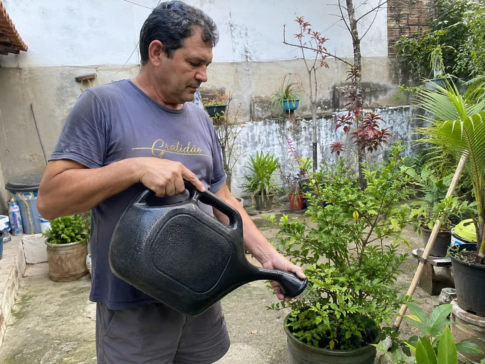

JARDINAGEM CASEIRA · SOLO & ADUBAÇÃO NATURAL
O ERRO SILENCIOSO que está matando suas plantas — e não, não é falta de água
Você rega todo dia, comprou adubo caro, mudou o vaso de lugar… e mesmo assim as folhas continuam amarelando e caindo. A verdade incômoda é que o problema quase nunca está na planta — está debaixo dela. E existe uma receita caseira, com 5 ingredientes que você já tem na cozinha, que ataca a raiz disso.

Deixa eu adivinhar como é a sua rotina…
Você rega na hora certa. Tirou do sol forte, depois colocou de volta. Conversou com a planta (vai, todo mundo já fez isso). Comprou aquele adubo "milagroso" da loja. E por alguns dias parece que melhora…
Mas aí as folhas voltam a amarelar. A ponta seca. E uma a uma, elas vão caindo.
Você começa a achar que é "mão preta", que jardinagem não é pra você. Joga a planta fora, fica com aquela sensação de fracasso — e quando anima de comprar outra, alguns meses depois, a história se repete.

Se isso parece a sua história, respira: o problema nunca foi você.
A RAIZ DE TUDO
O verdadeiro vilão é o SOLO MORTO — e nenhuma rega no mundo resolve isso
Pensa comigo: uma planta não come água. Ela bebe a água pra dissolver os nutrientes que estão no solo. Se o solo está exausto, sem vida, sem matéria orgânica viva… você pode regar o dia inteiro que ela continua faminta.
Com o tempo — vaso parado, terra velha, adubo químico que queima os microrganismos — o solo vira basicamente pó morto. Ele compacta, não respira, não segura nutriente. A raiz fica sufocada. E aí, por mais que você cuide, a planta vai definhando.

A boa notícia? Solo morto pode ser ressuscitado. E é mais simples (e barato) do que qualquer loja quer que você saiba.
ATENÇÃO
Os 5 erros que estão matando suas plantas (você provavelmente comete pelo menos 3)
Achar que regar mais é cuidar mais
Excesso de água em solo compactado apodrece a raiz e expulsa o oxigênio da terra. Você acha que está salvando… e está afogando. Mais água nunca conserta um solo sem vida.
Confiar no adubo químico de loja
Aquele granulado azul dá um "pico" rápido e enganoso. Ele força a planta, mas a longo prazo queima os microrganismos que mantêm o solo vivo — deixando a terra ainda mais dependente e estéril. É um empréstimo que cobra juros altos.

Nunca renovar a vida do solo
A terra do vaso é a mesma há meses (ou anos). Sem reposição de matéria orgânica viva, ela vira pó. Adubar a parte de cima sem reativar o solo é enxugar gelo.
Tratar todas as plantas igual
Suculenta, samambaia, alface da horta, orquídea… cada uma pede um manejo. O segredo não é decorar mil regras — é dar a elas uma base de solo viva e equilibrada, que serve de ponto de partida pra todas.
Acreditar que “não nasceu com o dom”
Não existe "mão preta". Existe solo morto e informação errada. Quem entende como reviver a terra consegue cuidar de qualquer planta — mesmo quem já matou um cacto sem querer.
A VIRADA DE CHAVE
Apresento a você: A Fórmula Ancestral do Solo
É uma receita caseira de adubo orgânico, passada de geração em geração, que reativa o solo de dentro pra fora. Nada de granulado químico. Nada de produto caro de loja.
São apenas 5 ingredientes — e todos eles provavelmente já estão na sua cozinha agora. Coisas simples, baratas, que a maioria das pessoas joga no lixo sem saber que são ouro puro pra terra.


Combinados na proporção certa — e essa proporção é o coração do guia — eles devolvem ao solo os microrganismos, os nutrientes e a estrutura que ele perdeu. O resultado: a terra volta a respirar, a raiz volta a se alimentar, e a planta reage.
Calma: a receita completa e as proporções exatas ficam dentro do guia. Aqui você só precisa entender uma coisa — é simples, é barato e você faz em casa.

RESULTADOS DE QUEM JÁ USOU
Antes e Depois Comprovado

E não foi só o Roberto. Veja algumas mensagens reais que chegaram de clientes que aplicaram a fórmula:


Depoimentos reais de clientes que autorizaram o uso da mensagem e da imagem. Cada planta e cada rotina é diferente — os resultados podem variar.
TUDO ISSO É 100% DIGITAL
O que você recebe hoje
Acesso imediato, direto no seu celular ou computador. Você não recebe nada físico em casa — é um guia digital que você acessa na hora do pagamento e prepara o adubo você mesmo.

- GUIA PRINCIPAL A Fórmula Ancestral do Solo (PDF, 47 páginas) — com a receita completa do adubo e as proporções exatas dos 5 ingredientes.
- BÔNUS #1 Calendário completo de rega — quanto e quando regar sem afogar nem deixar secar.
- BÔNUS #2 7 plantas que QUALQUER pessoa consegue ressuscitar — mesmo quem acha que tem "mão preta".
- BÔNUS #3 Guia de controle natural de pragas — adeus pulgão e cochonilha, sem veneno.
- BÔNUS #4 Onde encontrar os ingredientes — guia de compras pra achar tudo barato e fácil.
- VÍDEO AULA Vídeo aula passo a passo — te mostrando, na prática, como misturar os ingredientes e regar as plantas do jeito certo.
POR QUE TROCAR
Fórmula Ancestral vs. adubo industrializado
| A Fórmula Ancestral | Adubo de loja | |
|---|---|---|
| Custo | Centavos por uso (ingredientes de cozinha) | Frascos caros, comprados de novo e de novo |
| Química agressiva | Zero — 100% orgânico e natural | Sais e químicos que esgotam o solo |
| Seguro p/ pets e crianças | Sim, ingredientes naturais | Risco de intoxicação, fica longe de criança e bicho |
| Revive o solo morto | Sim — reativa a vida da terra | Mascara o sintoma, piora a longo prazo |
| Praticidade | Faz em casa, em minutos | Depende de ir à loja e escolher certo |
OFERTA DE LANÇAMENTO
Leve a Fórmula Ancestral + todos os bônus + a vídeo aula

PERGUNTAS FREQUENTES
Ficou com alguma dúvida?
Funciona em qualquer planta?
A fórmula age no solo, que é a base de praticamente toda planta de vaso ou horta — das suculentas e samambaias da varanda às hortaliças (alface, cebolinha, salsinha) e flores como rosa, girassol e orquídea. Cada planta tem seu tempo e suas manhas, mas todas se beneficiam de um solo vivo.
Preciso ter experiência com jardinagem?
Não. O guia foi feito justamente pra quem acha que tem "mão preta". É passo a passo, em linguagem simples, e a vídeo aula te mostra cada etapa na prática.
É difícil ou trabalhoso de fazer?
Não. São 5 ingredientes de cozinha e poucos minutos de preparo. Se você sabe fazer uma vitamina no liquidificador, dá conta da fórmula tranquilamente.
Em quanto tempo eu vejo resultado?
Varia de planta pra planta e do estado em que ela está. Na média relatada pelos clientes, as plantas costumam começar a se revigorar a partir de cerca de 14 dias de uso. Não é uma promessa cravada pra toda e qualquer planta — é a tendência que a maioria observa quando o solo volta a ficar vivo.
Vou receber algum produto físico em casa?
Não. É 100% digital. Você não recebe nenhum pó, frasco ou adubo pelo correio. O que você recebe é o guia em PDF + a vídeo aula com a receita, e prepara o adubo você mesmo, em casa, com ingredientes baratos.
Como eu recebo o acesso?
Assim que o pagamento é confirmado, o acesso é liberado na hora. Você recebe por e-mail e acessa o guia, os bônus e a vídeo aula direto pelo celular ou computador, quando e onde quiser.
Suas plantas não precisam morrer mais.
A terra pode voltar a ficar viva — e você pode aprender exatamente como, hoje, por menos do que custa um lanche. Guia em PDF + vídeo aula + 4 bônus, acesso imediato, com 7 dias de garantia total.
Garantia de 7 dias · pagamento seguro · nada físico é enviado